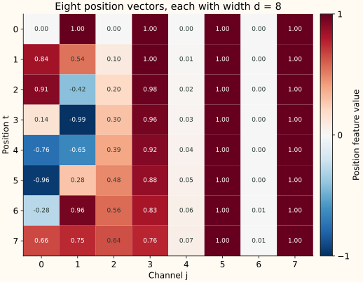
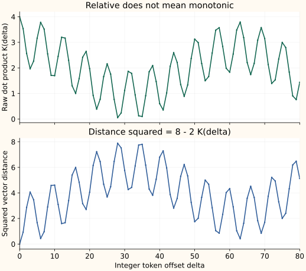

Positional Encoding Deep Dive
A position vector is easy to generate. Understanding what its geometry gives the model, and what survives after the model transforms it, takes more work. This guide follows an eight-channel example through those questions.
Reference reading: Amirhossein Kazemnejad's Transformer Architecture: The Positional Encoding. The calculations, figures, and explanation here are independent. For a shorter introduction and the embedding-width comparison, use the position-encoding guide.
Build one position vector before discussing attention
Let $t$ be the token's position, starting at 0. Let $d$ be the number of features in its embedding. We use $d=8$, so there are four sine/cosine pairs. Pair index $r$ takes the values 0, 1, 2, and 3.
$\omega_r$ is the frequency of pair $r$. At width 8, the exponent is $r/4$, giving frequencies $1,0.1,0.01,0.001$. We calculate the angle $t\omega_r$ once, then fill two channels from it.
| Pair and frequency | Angle $2\omega_r$ | Sine / cosine values |
|---|---|---|
| $r=0,\;\omega_0=1$ | 2 | 0.9093 / -0.4161 |
| $r=1,\;\omega_1=0.1$ | 0.2 | 0.1987 / 0.9801 |
| $r=2,\;\omega_2=0.01$ | 0.02 | 0.0200 / 0.9998 |
| $r=3,\;\omega_3=0.001$ | 0.002 | 0.0020 / 1.0000 |
The final vector interleaves those values. Values displayed below are rounded; a cosine shown as 1.0000 need not be exactly 1.
P(0) = [0, 1, 0, 1, 0, 1, 0, 1 ] P(2) ≈ [0.9093, -0.4161, 0.1987, 0.9801, 0.0200, 0.9998, 0.0020, 1.0000]


Choose what a position ID means
A content-only attention layer can compare tokens without knowing their order. If we permute its token rows and visibility structure together, its output rows permute too. A causal mask introduces order through visibility, but the model can also use explicit position features.
Position IDs should have the meaning expected by the model. Normalizing them independently inside each sentence changes that meaning. For example, with IDs $u_t=t/(L-1)$, the offset between adjacent tokens is $1/4$ at length $L=5$ but $1/8$ at length $L=9$.
This normalization is defined here for $L>1$. It can be a deliberate relative-to-document feature, but it is not a consistent token-step distance across lengths. Ordinary sinusoidal positions use the unnormalized token index $t$, so the same offset means the same number of token steps.
A raw index is also a valid feature choice. Its magnitude grows with the index; a sinusoidal vector keeps every channel bounded. A learned position table is another option. These are modeling choices, not a theorem that all encodings must have the same form or performance.
Why two values represent one frequency
For one frequency, set $\theta=t\omega$. The pair $v_\omega(t)=(\sin\theta,\cos\theta)^\top$ records phase in two coordinates. At phases 0 and $\pi$, sine is zero in both cases but cosine distinguishes 1 from -1.
Those are phase examples, not a claim that the two phases are distinct integer indices under the frequency-1 schedule. A sine-only feature can distinguish a chosen discrete set. The matched pair's benefit is its predictable geometry: it represents phase modulo $2\pi$ and supports the shift rule below.
Four pairs therefore give $\lVert P(t)\rVert^2=4$ at width 8, regardless of $t$. Different channels vary, but the raw position vector's total length is constant.
Cosine is a quarter-cycle-shifted sine, $\cos\theta=\sin(\theta+\pi/2)$. Two sine channels with that phase difference are equivalent to this pair; two copies of the same sine are redundant. Multiple pairs use different frequencies so a position offset is represented at several scales.
At width 8, the wavelengths are approximately 6.28, 62.83, 628.32, and 6283.19 token steps. Changing the width changes the frequency grid, as the dimension-dependence examples show. A single pair is periodic on real-valued positions, and finite precision can introduce additional aliases.
Treat an offset as an operator
Keep frequency $\omega$ fixed and shift by $k$ token steps. The phase change is $k\omega$. The same two-by-two matrix maps every starting position's pair to its shifted pair:
At the fastest pair, $\omega=1$. For offset $k=1$, the matrix is approximately $\begin{pmatrix}0.5403&0.8415\\-0.8415&0.5403\end{pmatrix}$. Apply it to $v_1(0)=(0,1)^\top$ to obtain $v_1(1)\approx(0.8415,0.5403)^\top$. Applying it again gives $v_1(2)\approx(0.9093,-0.4161)^\top$.
Determine the matrix from two phase probes
Timo Denk's linear-relationships article develops the fixed-offset transformation. Here is an independent way to determine our pair's matrix. Write $\delta=k\omega$ for the phase offset.
At phase 0, the old pair is $(0,1)^\top$. After the shift it must be $(\sin\delta,\cos\delta)^\top$. Multiplying by $(0,1)^\top$ selects the matrix's second column, so that column is fixed.
At phase $\pi/2$, the old pair is $(1,0)^\top$. After the shift it must be $(\cos\delta,-\sin\delta)^\top$. This selects and fixes the first column. Together the two columns give:
These phase probes determine a candidate matrix; to verify it for every phase $\theta=t\omega$, multiply it by $(\sin\theta,\cos\theta)^\top$ and use angle addition:
This verification holds for any starting phase. The probes use continuous phases to establish the algebra; they need not be integer token positions at the chosen frequency.
This is a statement about a fixed offset, not about one matrix predicting every possible next offset. Offset 2 uses $R_\omega(2)$; offset -1 uses the reverse rotation. The operators compose consistently:
Here $I$ is the identity matrix. For the complete vector, put one rotation per frequency along the diagonal of a larger matrix, $T_k=\operatorname{diag}(R_{\omega_0}(k),\ldots,R_{\omega_3}(k))$. Then $P(t+k)=T_kP(t)$.
Each block is $2\times2$, including the zero blocks, so $T_k$ has shape $8\times8$. Each pair is shifted independently. Its coefficients depend on the offset and the chosen frequencies, not on $t$. This is the full-vector linear relationship; whether a trained attention head uses it effectively is a separate question.
Optional: derive the rotation using a complex phase
Let $\mathrm i$ denote the imaginary unit, separate from our position index $t$. Euler's identity gives $z_\omega(t)=e^{\mathrm i t\omega}=\cos(t\omega)+\mathrm i\sin(t\omega)$. Shifting multiplies this number by a factor independent of the start:
If the old sine and cosine values are $s$ and $c$, multiplying $(\cos(k\omega)+\mathrm i\sin(k\omega))(c+\mathrm i s)$ gives imaginary part $s\cos(k\omega)+c\sin(k\omega)$ and real part $c\cos(k\omega)-s\sin(k\omega)$. Listing imaginary part first reproduces our $(\sin,\cos)$ matrix above.
Derive the relative dot product and distance
Take two raw position vectors with indices $t$ and $s$. Each frequency pair contributes:
Summing the four contributions at width 8 produces a kernel, meaning a comparison function between positions. Define $K(\Delta)$ with offset $\Delta=t-s$:
The starting position disappears from this raw dot product. Because both vectors have squared length 4, their squared distance is:
Thus the same token offset has the same raw-vector distance at any starting position. This is a relative-geometry property, not a promise that distance always increases with the offset.
| Offset $\Delta$ | Dot product $K(\Delta)$ | Squared distance |
|---|---|---|
| 0 | 4.0000 | 0.0000 |
| 1 | 3.5353 | 0.9295 |
| 3 | 1.9649 | 4.0702 |
| 4 | 2.2666 | 3.4668 |


What changes when token content enters attention?
Let $E_t$ be the learned token embedding at position $t$, and let $x_t=E_t+P(t)$ be the vector sent into the model. Treat these vectors as columns. Query/key matrices $W_Q,W_K$ have shape $d\times d_k$, giving $q_t=W_Q^\top x_t$ and $k_s=W_K^\top x_s$. Write $A=W_QW_K^\top$ for their combined $d\times d$ matrix. Ignoring the common attention scale factor, the score between two positions is:
There are content-content, content-position, position-content, and position-position terms. Even the last term uses $A$, whereas our relative dot-product identity used the identity matrix. An arbitrary learned $A$ need not preserve that identity.
For a concrete counterexample, let $A$ keep only the first sine channel of the width-8 vector. The position-only score becomes $\sin(t)\sin(s)$. At $(t,s)=(0,1)$ it is 0; at $(1,2)$ it is about 0.7651, despite both pairs having the same token gap of 1.
Sinusoidal inputs make relative relationships available. They do not force every attention head to be purely relative or automatically favor nearby tokens. RoPE places rotations directly in query/key coordinates, while ALiBi adds a distance-dependent score bias.
Why addition is common, and what it cannot prove
Token and position vectors can be added because both have width $d$. The combined vector still has width $d$, so existing projections keep their shapes. Concatenating instead gives width $2d$, unless another projection reduces it.
For example, a query projection from width $d$ to head width $d_k$ uses $dd_k$ weights. A direct projection from concatenated width $2d$ uses $2dd_k$ weights. This is a shape and parameter-count difference; it does not establish that addition is always more accurate.
Addition also does not make two arbitrary unknown vectors uniquely separable. For any vector $v$, $(E_t+v)+(P(t)-v)$ has the same sum. A fixed position convention can let us subtract its known vector, but a combined vector by itself is not a general decoder for two unknown signals.
The learned embeddings and model projections can adapt to the combined features. We should not assume that semantic information lives only in some channels while positional information lives only in the others. Slow position channels still contain position features; their usefulness depends on the model and context window.
Does the signal survive every layer?
A residual operation writes $x_{\mathrm{next}}=x+F(x)$. It provides a path that carries the previous representation forward, and the derivative contains an identity contribution:
where $J_F$ is the Jacobian of the update function. That structure supports information and gradient flow. It is not a guarantee that the exact original position vector remains recoverable forever: an update can transform or even cancel a component. The mathematical example $F(x)=-x$ would make the residual output zero.
Later layers may encode useful position relationships in a different representation. Preserving a route from the input and preserving every original coordinate unchanged are different claims.
Implement and test explicit position IDs
This small NumPy version takes the desired IDs rather than assuming every call starts at zero. For cached decoding, the next token after a prefix of length 5 needs ID 5, not another ID 0.
import numpy as np
def position_vectors(position_ids, width):
if not isinstance(width, (int, np.integer)) or width <= 0 or width % 2:
raise ValueError("width must be a positive even integer")
ids = np.asarray(position_ids, dtype=np.float64)
if ids.ndim != 1 or not np.all(np.isfinite(ids)):
raise ValueError("position_ids must be a finite one-dimensional sequence")
if np.any(ids < 0) or np.any(ids != np.floor(ids)):
raise ValueError("position_ids must contain nonnegative integers")
omega = 10000.0 ** (-np.arange(0, width, 2) / width)
phase = ids[:, None] * omega[None, :]
result = np.empty((len(ids), width))
result[:, 0::2] = np.sin(phase)
result[:, 1::2] = np.cos(phase)
return result
prefix = position_vectors(np.arange(5), 8)
next_token = position_vectors([5], 8)
full = position_vectors(np.arange(6), 8)
np.testing.assert_allclose(next_token[0], full[5])
np.testing.assert_allclose(np.sum(full**2, axis=1), 4)
print(np.round(full[2], 4))The output for position 2 is the vector from the first section. The formula can be evaluated beyond training positions, but accuracy there is not automatic. Large indices can also lose precision when converted to floating point. For packed documents, padding, or caching, keep position IDs consistent with the model's training convention and attention boundaries.
The figure-generation script uses the shared position-function helper, reproduces both original plots, and checks the kernel and distance identities. Run it with that helper alongside it. These are mathematical checks, not a long-context training benchmark.
References and next steps
- Amirhossein Kazemnejad: Transformer Architecture: The Positional Encoding, reference reading on the topic.
- Timo Denk: Linear Relationships in the Transformer's Positional Encoding, reference reading on the offset transformation.
- Attention Is All You Need, Section 3.5, the original fixed/learned comparison and sinusoidal motivation.
- Embedding-width and channel-index visualizations, with independently computed widths 20 and 50.
The original Transformer experiments found nearly identical results for learned and fixed positions in that setup. The fixed formula's extension to new positions was a motivation for choosing it, not proof of universal generalization. For related mechanisms, continue with RoPE or ALiBi.